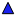
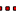

<!doctype html>
<html lang="pt-br">
    <head>
        <meta charset="utf-8">
        <meta http-equiv="X-UA-Compatible" content="IE=edge">
        <meta name="viewport" content="initial-scale=1,user-scalable=no,maximum-scale=1,width=device-width">
        <meta name="mobile-web-app-capable" content="yes">
        <meta name="apple-mobile-web-app-capable" content="yes">
        <link rel="stylesheet" href="css/leaflet.css"><link rel="stylesheet" href="http://maxcdn.bootstrapcdn.com/font-awesome/4.6.1/css/font-awesome.min.css"><link rel="stylesheet" href="css/L.Control.Locate.min.css">
        <link rel="stylesheet" href="css/qgis2web.css">
        <link rel="stylesheet" href="css/leaflet-measure.css">
        <style>
        html, body, #map {
            width: 100%;
            height: 100%;
            padding: 0;
            margin: 0;
        }
        </style>
        <title></title>
    </head>
    <body>
        <div id="map">
        </div>
        <script src="js/qgis2web_expressions.js"></script>
        <script src="js/leaflet.js"></script><script src="js/L.Control.Locate.min.js"></script>
        <script src="js/leaflet-svg-shape-markers.min.js"></script>
        <script src="js/leaflet.rotatedMarker.js"></script>
        <script src="js/leaflet.pattern.js"></script>
        <script src="js/leaflet-hash.js"></script>
        <script src="js/Autolinker.min.js"></script>
        <script src="js/rbush.min.js"></script>
        <script src="js/labelgun.min.js"></script>
        <script src="js/labels.js"></script>
        <script src="js/leaflet-measure.js"></script>
        <script src="data/verticesareaTOPOGRAPHcorrigdoline_2.js"></script>
        <script src="data/verticesareaTOPOGRAPHcorrigdopoint_3.js"></script>
        <script>
        var highlightLayer;
        function highlightFeature(e) {
            highlightLayer = e.target;

            if (e.target.feature.geometry.type === 'LineString') {
              highlightLayer.setStyle({
                color: '#ffff00',
              });
            } else {
              highlightLayer.setStyle({
                fillColor: '#ffff00',
                fillOpacity: 1
              });
            }
            highlightLayer.openPopup();
        }
        var map = L.map('map', {
            zoomControl:true, maxZoom:28, minZoom:1
        }).fitBounds([[-25.6293611044,-48.4360900805],[-25.6181333527,-48.4168198698]]);
        var hash = new L.Hash(map);
        map.attributionControl.addAttribution('<a href="https://github.com/tomchadwin/qgis2web" target="_blank">qgis2web</a>');
        L.control.locate().addTo(map);
        var measureControl = new L.Control.Measure({
            primaryLengthUnit: 'meters',
            secondaryLengthUnit: 'kilometers',
            primaryAreaUnit: 'sqmeters',
            secondaryAreaUnit: 'hectares'
        });
        measureControl.addTo(map);
        var bounds_group = new L.featureGroup([]);
        function setBounds() {
        }
        var overlay_GoogleRoad_0 = L.tileLayer('https://mt1.google.com/vt/lyrs=m&x={x}&y={y}&z={z}', {
            opacity: 1.0
        });
        overlay_GoogleRoad_0.addTo(map);
        map.addLayer(overlay_GoogleRoad_0);
        var overlay_GoogleSatellite_1 = L.tileLayer('https://mt1.google.com/vt/lyrs=s&x={x}&y={y}&z={z}', {
            opacity: 1.0
        });
        overlay_GoogleSatellite_1.addTo(map);
        map.addLayer(overlay_GoogleSatellite_1);
        function pop_verticesareaTOPOGRAPHcorrigdoline_2(feature, layer) {
            layer.on({
                mouseout: function(e) {
                    for (i in e.target._eventParents) {
                        e.target._eventParents[i].resetStyle(e.target);
                    }
                    if (typeof layer.closePopup == 'function') {
                        layer.closePopup();
                    } else {
                        layer.eachLayer(function(feature){
                            feature.closePopup()
                        });
                    }
                },
                mouseover: highlightFeature,
            });
            var popupContent = '<table>\
                    <tr>\
                        <td colspan="2">' + (feature.properties['Layer'] !== null ? Autolinker.link(String(feature.properties['Layer'])) : '') + '</td>\
                    </tr>\
                    <tr>\
                        <td colspan="2">' + (feature.properties['SubClasses'] !== null ? Autolinker.link(String(feature.properties['SubClasses'])) : '') + '</td>\
                    </tr>\
                    <tr>\
                        <td colspan="2">' + (feature.properties['ExtendedEn'] !== null ? Autolinker.link(String(feature.properties['ExtendedEn'])) : '') + '</td>\
                    </tr>\
                    <tr>\
                        <td colspan="2">' + (feature.properties['Linetype'] !== null ? Autolinker.link(String(feature.properties['Linetype'])) : '') + '</td>\
                    </tr>\
                    <tr>\
                        <td colspan="2">' + (feature.properties['EntityHand'] !== null ? Autolinker.link(String(feature.properties['EntityHand'])) : '') + '</td>\
                    </tr>\
                    <tr>\
                        <td colspan="2">' + (feature.properties['Text'] !== null ? Autolinker.link(String(feature.properties['Text'])) : '') + '</td>\
                    </tr>\
                </table>';
            layer.bindPopup(popupContent, {maxHeight: 400});
        }

        function style_verticesareaTOPOGRAPHcorrigdoline_2_0() {
            return {
                pane: 'pane_verticesareaTOPOGRAPHcorrigdoline_2',
            }
        }
        map.createPane('pane_verticesareaTOPOGRAPHcorrigdoline_2');
        map.getPane('pane_verticesareaTOPOGRAPHcorrigdoline_2').style.zIndex = 402;
        map.getPane('pane_verticesareaTOPOGRAPHcorrigdoline_2').style['mix-blend-mode'] = 'normal';
        var layer_verticesareaTOPOGRAPHcorrigdoline_2 = new L.geoJson(json_verticesareaTOPOGRAPHcorrigdoline_2, {
            attribution: '<a href=""></a>',
            pane: 'pane_verticesareaTOPOGRAPHcorrigdoline_2',
            onEachFeature: pop_verticesareaTOPOGRAPHcorrigdoline_2,
            style: style_verticesareaTOPOGRAPHcorrigdoline_2_0,
        });
        bounds_group.addLayer(layer_verticesareaTOPOGRAPHcorrigdoline_2);
        map.addLayer(layer_verticesareaTOPOGRAPHcorrigdoline_2);
        function pop_verticesareaTOPOGRAPHcorrigdopoint_3(feature, layer) {
            layer.on({
                mouseout: function(e) {
                    for (i in e.target._eventParents) {
                        e.target._eventParents[i].resetStyle(e.target);
                    }
                    if (typeof layer.closePopup == 'function') {
                        layer.closePopup();
                    } else {
                        layer.eachLayer(function(feature){
                            feature.closePopup()
                        });
                    }
                },
                mouseover: highlightFeature,
            });
            var popupContent = '<table>\
                    <tr>\
                        <td colspan="2">' + (feature.properties['Layer'] !== null ? Autolinker.link(String(feature.properties['Layer'])) : '') + '</td>\
                    </tr>\
                    <tr>\
                        <td colspan="2">' + (feature.properties['SubClasses'] !== null ? Autolinker.link(String(feature.properties['SubClasses'])) : '') + '</td>\
                    </tr>\
                    <tr>\
                        <td colspan="2">' + (feature.properties['ExtendedEn'] !== null ? Autolinker.link(String(feature.properties['ExtendedEn'])) : '') + '</td>\
                    </tr>\
                    <tr>\
                        <td colspan="2">' + (feature.properties['Linetype'] !== null ? Autolinker.link(String(feature.properties['Linetype'])) : '') + '</td>\
                    </tr>\
                    <tr>\
                        <td colspan="2">' + (feature.properties['EntityHand'] !== null ? Autolinker.link(String(feature.properties['EntityHand'])) : '') + '</td>\
                    </tr>\
                    <tr>\
                        <td colspan="2">' + (feature.properties['Text'] !== null ? Autolinker.link(String(feature.properties['Text'])) : '') + '</td>\
                    </tr>\
                </table>';
            layer.bindPopup(popupContent, {maxHeight: 400});
        }

        function style_verticesareaTOPOGRAPHcorrigdopoint_3_0() {
            return {
                pane: 'pane_verticesareaTOPOGRAPHcorrigdopoint_3',
                shape: 'triangle',
                radius: 6.0,
                opacity: 1,
                color: 'rgba(0,0,0,1.0)',
                dashArray: '',
                lineCap: 'butt',
                lineJoin: 'miter',
                weight: 1,
                fill: true,
                fillOpacity: 1,
                fillColor: 'rgba(27,34,239,1.0)',
            }
        }
        map.createPane('pane_verticesareaTOPOGRAPHcorrigdopoint_3');
        map.getPane('pane_verticesareaTOPOGRAPHcorrigdopoint_3').style.zIndex = 403;
        map.getPane('pane_verticesareaTOPOGRAPHcorrigdopoint_3').style['mix-blend-mode'] = 'normal';
        var layer_verticesareaTOPOGRAPHcorrigdopoint_3 = new L.geoJson(json_verticesareaTOPOGRAPHcorrigdopoint_3, {
            attribution: '<a href=""></a>',
            pane: 'pane_verticesareaTOPOGRAPHcorrigdopoint_3',
            onEachFeature: pop_verticesareaTOPOGRAPHcorrigdopoint_3,
            pointToLayer: function (feature, latlng) {
                var context = {
                    feature: feature,
                    variables: {}
                };
                return L.shapeMarker(latlng, style_verticesareaTOPOGRAPHcorrigdopoint_3_0(feature));
            },
        });
        bounds_group.addLayer(layer_verticesareaTOPOGRAPHcorrigdopoint_3);
        map.addLayer(layer_verticesareaTOPOGRAPHcorrigdopoint_3);
        var baseMaps = {};
        L.control.layers(baseMaps,{' vertices-area-TOPOGRAPH-corrigdo-point': layer_verticesareaTOPOGRAPHcorrigdopoint_3,' vertices-area-TOPOGRAPH-corrigdo-line': layer_verticesareaTOPOGRAPHcorrigdoline_2,"Google Satellite": overlay_GoogleSatellite_1,"Google Road": overlay_GoogleRoad_0,}).addTo(map);
        setBounds();
        var i = 0;
        layer_verticesareaTOPOGRAPHcorrigdopoint_3.eachLayer(function(layer) {
            var context = {
                feature: layer.feature,
                variables: {}
            };
            layer.bindTooltip((layer.feature.properties['Text'] !== null?String('<div style="color: #000000; font-size: 12pt; font-family: \'MS Shell Dlg 2\', sans-serif;">' + layer.feature.properties['Text']) + '</div>':''), {permanent: true, offset: [-0, -16], className: 'css_verticesareaTOPOGRAPHcorrigdopoint_3'});
            labels.push(layer);
            totalMarkers += 1;
              layer.added = true;
              addLabel(layer, i);
              i++;
        });
        resetLabels([layer_verticesareaTOPOGRAPHcorrigdopoint_3]);
        map.on("zoomend", function(){
            resetLabels([layer_verticesareaTOPOGRAPHcorrigdopoint_3]);
        });
        map.on("layeradd", function(){
            resetLabels([layer_verticesareaTOPOGRAPHcorrigdopoint_3]);
        });
        map.on("layerremove", function(){
            resetLabels([layer_verticesareaTOPOGRAPHcorrigdopoint_3]);
        });
        </script>
    </body>
</html>
